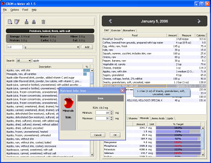
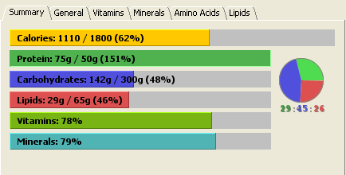

CRON-O-MeterCR (Calorie Reduced) diets require a lot of information to perform optimally. In order to restrict caloric intake, but remain healthy, users of the diet must track their vitamin, mineral, and protein intakes with great care.We aim to provide a complete solution to the CR dieter. Current open-source diet-tracking applications fall short in some vital respects. Either they are not detailed enough, or they suffer from critical usability flaws. We believe that a diet tracker must be effortless to operate for the activity for which it will be used most of the time, keeping track of the foods eaten in a particular meal. To this end, we are developing CRON-O-Meter, an application that will take into account good usability design and dense functionality. It will provide diet advice, track consumption and exercise, and generally assist in all aspects of a CR diet. CRON-O-Meter is free and open source, and cross-platform. It is still in early development but useful enough now for basic daily diet tracking. Features
Screenshots

The main food entry screen

Close-up of the daily nutritional summary. Shows your overall nutrition at a glance. |

CRON-O-Meter v0.3.0
Download Windows Version
NOTE: Windows users must have java installed to run program:
Get Java! Related Links
Sponsored Links |